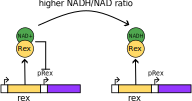
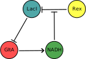

Synthetic biology in Geobacter sulfurreducens
Implementation of an electrogenetic oscillator using an NADH/NAD sensor
Lewis Grozinger1
Lorea Alejaldre1
Ángel Goñi-Moreno1
Sara Mozo Pacheco2, 3
Abraham Esteve-Nuñez2, 3
1Biocomputation group, Centre for Biotechnology and Plant Genomics, UPM (INIA/CSIC), Madrid
2IMDEA Water, Alcalá de Henares, Madrid, Spain
3Chemical Engineering Department, University of Alcala, Alcalá de Henares, Madrid, Spain
A microbial electroactive biofilm system
Objective: Oscillations
Modify the genome of Geobacter (synthetic gene network)
To change the behaviour of Geobacter biofilm
From stable steady-state to stable oscillations
Synthetic electrogenetic network: switches
Problem: synthetic electrogenetic oscillator
Design and build a synthetic gene network in Geobacter
Such that their biofilm produces oscillating current
First attempt: repressilator + gltA
Bacteria oscillate separately
Tiny fluctuations push them out of sync
They "cancel" each other out (interference)
But if they were coupled they would synchronise
Solution: B-Rex NADH/NAD sensor
Rex is a repressor from Gram-positive bacteria
When bound to NAD+ it inhibits target gene expression
We propose to use Rex to incorporate NADH into the network
Solution: NADH/NAD coupling bacteria
Rex is a repressor from Gram-positive bacteria
When bound to NAD+ it inhibits target gene expression
Solution: coupling in action
NADH is part of the oscillatory network
NADH levels get feedback from state of the biofilm
Provides coupling between neighbouring Geobacter
Synchronises oscillations in biolfilm current
Experimental approach: circuit assembly